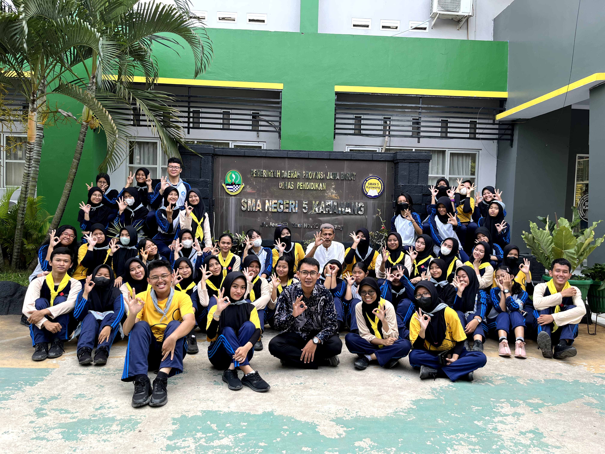
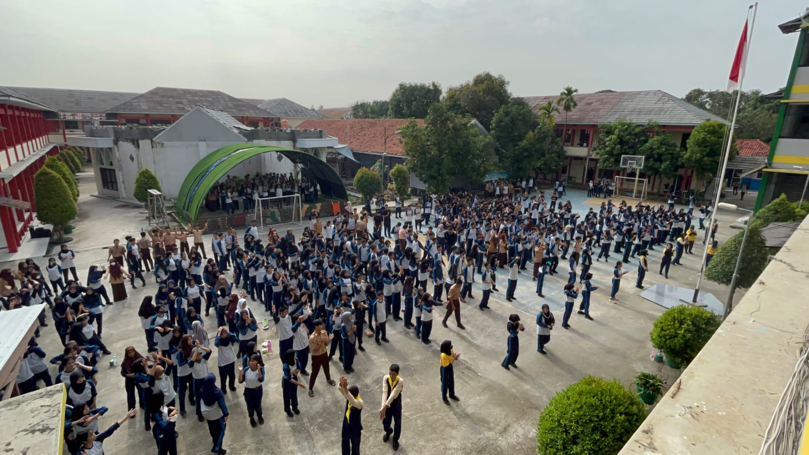
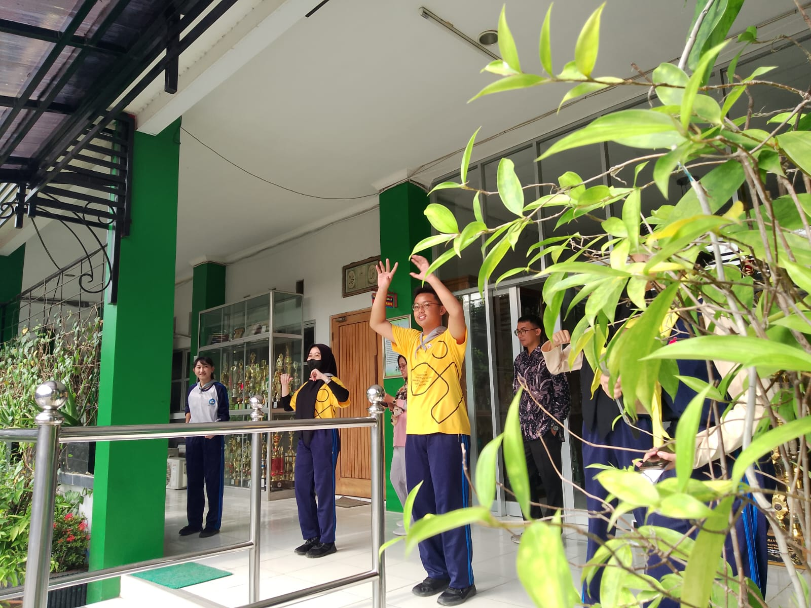
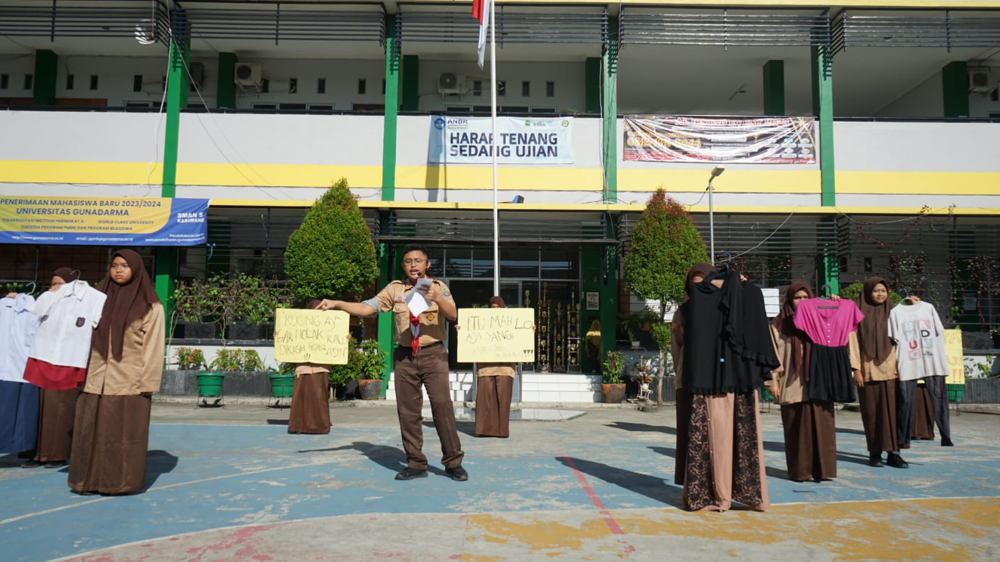
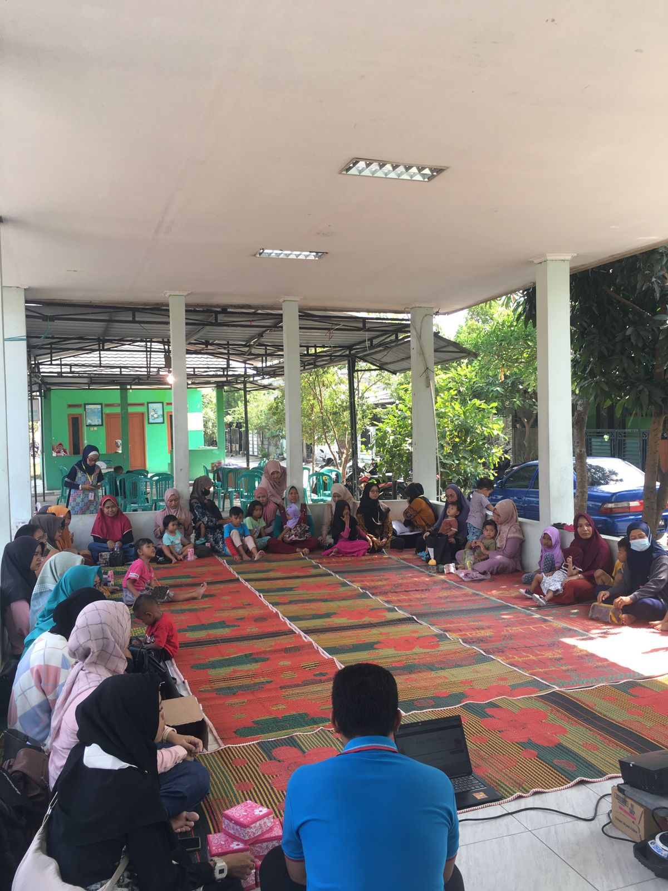
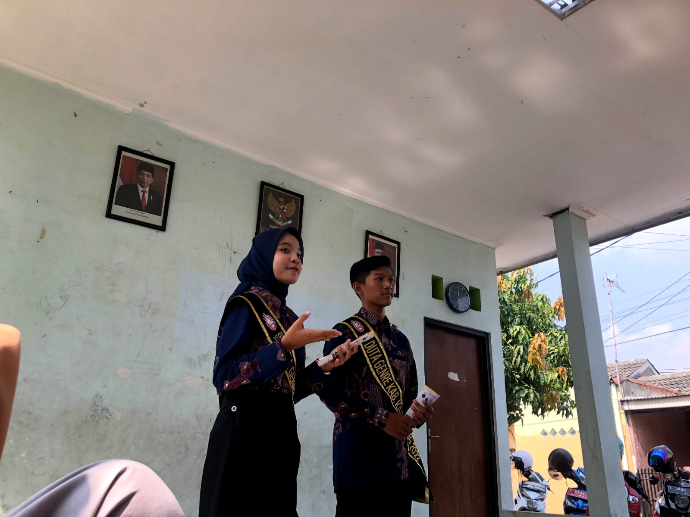
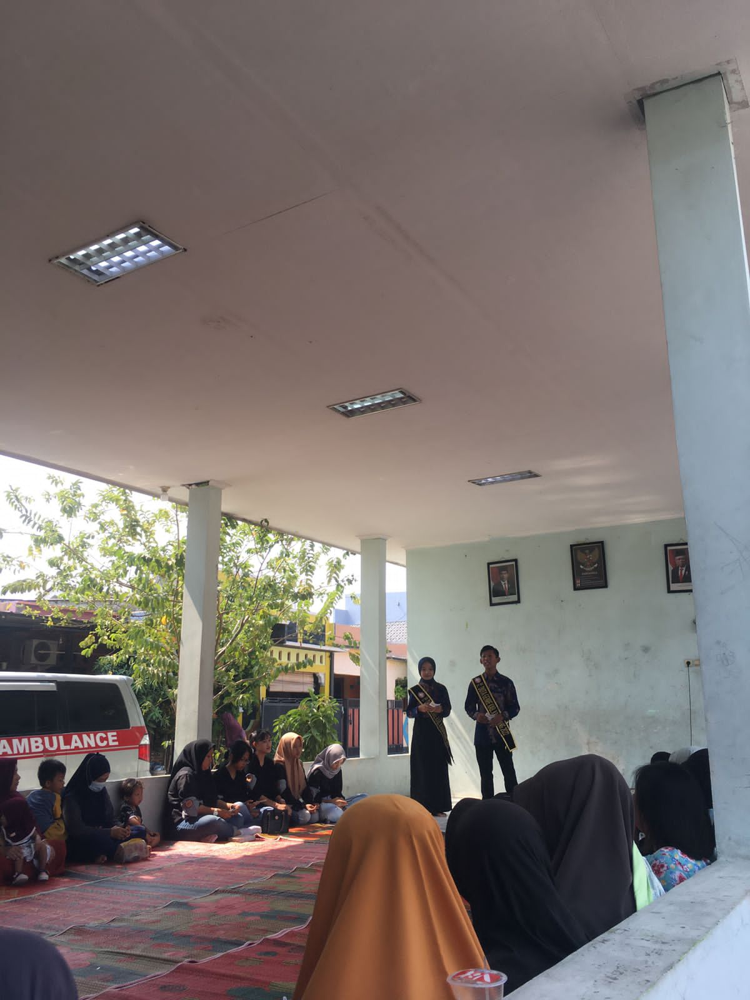

Program PIKR - FIVE
SARITA (Sampah Bercerita)
Sarita merupakan program kerja unggulan PIK-R FIVE, yang bertujuan untuk menampung seluruh keluh kesah siswa/i dan membantu memberikan solusi atas permasalahan yang sedang di alami melalui media sosial PIK-R FIVE.
Waktu: 08.00-09.00
Hari Tanggal Pelaksanaan: Satu bulan satu kali di hari jumat minggu kedua
Rincian kegiatan program sarita adalah sebagai berikut:
GESER (Gerakan Sehat Remaja)
Gerakan Sehat Remaja merupakan program yang dibuat untuk memperingati Hari Gizi Nasional dengan cara memberikan penyuluhan tentang Stunting, melakukan senam, makan buah bersama dan minum tablet tambah darah bersama. Yang bertujuan untuk mengurangi angka gizi buruk dan anemia pada remaja.
Waktu : 07.10-08.35
Hari Tanggal Pelaksanaan: Jumat, 10 Maret 2023
Rincian kegiatan program sarita adalah sebagai berikut:



PIK-LAB (PIK-R Collaboration)
Program PIK-R Collaboration merupakan program kolaborasi antara PIK-R dan organisasi-organisasi yang ada di sekolah untuk mengangkat sebuah permasalahan yang sedang marak terjadi di lingkugan sekolah dan membutuhkan tindak lanjut, terutama masalah dari kenakalan-kenakalan remaja. PIK-R akan bekerja sama untuk melakukan penyuluhan untuk menanggulangi permasalahan tersebut.
Waktu: 07.10-08.30
Hari Tanggal Pelaksanaan: Jumat, 12 Mei 2023
Rincian kegiatan program sarita adalah sebagai berikut:

SEMINAR PUBLIC SPEAKING
Seminar Public Speaking merupakan program yang bertujuan untuk melatih cara bicara di hadapan umum yang merupakan ilmu penting dan dibutuhkan oleh generasi-generasi selanjutnya.
Waktu: 09.00-12.30
Hari Tanggal Pelaksanaan : Selasa, 17 Oktober 2023
Rincian kegiatan program sarita adalah sebagai berikut:
FIVE TRIP (Penyuluhan Stunting ke Posyandu)
Program kegiatan FIVE TRIP adalah kegiatan yang dilakukan untuk memberikan bantuan berupa Penyuluhan-penyuluhan ke lingkungan sekitar atau luar sekolah perihal GenRe.
Waktu: 08.30-10.30
Hari Tanggal Pelaksanaan: Sabtu, 14 Oktober 2023
Rincian kegiatan program sarita adalah sebagai berikut:


FIVETOK
Fivetok merupakan program edukasi digital di seluruh platform media sosial terutama TikTok, dengan video-video menarik & bermanfaat.